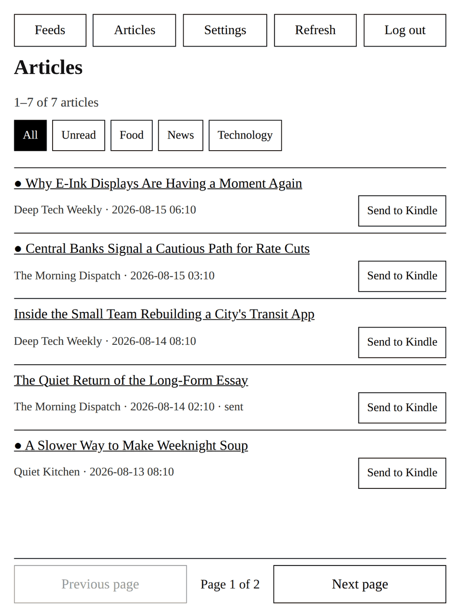
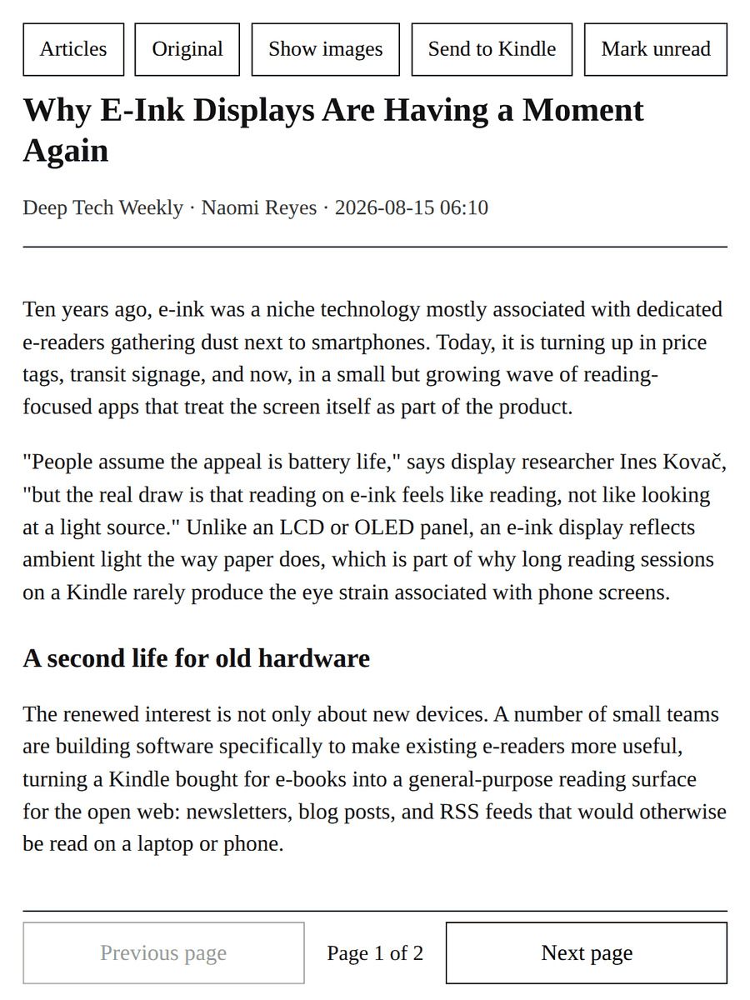

Your feeds, delivered to your Kindle.
Extrablatt turns the RSS and Atom feeds you already follow into clean, paginated e-books that land straight in your Kindle library — no scrolling, no phone, no ads. Read the whole article, a page at a time, the way an e-ink screen was meant to be read.
Free to use. No ads, no tracking, nothing to buy.


Built for a device that isn't a phone
Straight to your library
Every article becomes a real EPUB 3 and is e-mailed directly to your Kindle's Send-to-Kindle address — it shows up in your library like any other book.
Paged, not scrolled
Articles and lists are laid out a screenful at a time. Turning a page is one instant repaint instead of a slow, laggy scroll on e-ink.
Add a feed from any homepage
Paste a normal website address and Extrablatt looks for its RSS or Atom feed for you — you don't need to go hunting for an XML link.
Clean, distraction-free text
Full article content is extracted and sanitized, with images off by default, so you get the writing without the surrounding clutter.
Your feeds, your account
Every account is fully isolated — your subscriptions, read state, and reading history belong to you and nobody else.
Free, and it stays that way
No ads, no subscriptions, nothing to sell. Running the servers still costs something, so if it's useful to you, a small donation helps keep it running.
Three steps to your first article
-
1
Create a free account
Sign up with an e-mail and password, and confirm your address.
-
2
Add your feeds
Paste a website or feed URL, and add your Kindle's e-mail address under Settings.
-
3
Send to Kindle
Read on the web whenever you like, and tap Send to Kindle to have the full article waiting on your device.